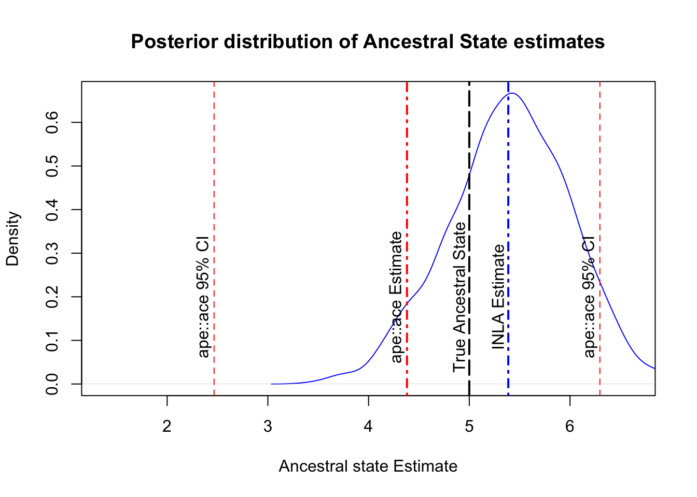

A common task in phylogenetics is ancestral state reconstruction. There are a number of tools to do this inside and outside R. Some noteable R examples are: using ape (which I will use for comparison today), and phytools, which are both frequentist implementations. Bayesian implementations are available using BayesTraits. This post shows how to implement a Bayesian ancestral state reconstruction approach using the R modelling package INLA. As with my previous INLA post, the process is a result of discussions with Russell Dinnage, and any mistakes are surely introduced by me.
For starters. I first simulate a simple ancestral state result using ape, where the ancestral state of the phylogeny is 5:
library(ape)# Simulate a tree for n taxa. n =100sim.tree =rcoal(n = n)# Simulate a continuous trait along that tree, where the ancestral state is 5# With a standard deviation of 1.5 (sigma)y =rTraitCont(phy = sim.tree, root.value =5, sigma =1.5)# Calculate the ancestral stateanc =ace(y, sim.tree)cat("The ancestral state is estimated to be:", round(anc$ace[1], 2), "\n","With a 95% CI of:", round(anc$CI95[1,], 3))
The ancestral state is estimated to be: 4.38
With a 95% CI of: 2.466 6.297
The default ancestral state model is Brownian motion, and it does a pretty good job at estimating our known ancestral state of 5. This coding procedure is pretty simple, and to code the same results in INLA is quite complicated, so you may ask why we need something more complicated, which I will discuss at the end.
Next, we code the same model up using INLA, which requires a small amount of data wrangling:
library(INLA)library(stringr)# INLA requires the data as a dataframe. model_df =data.frame(label =names(y), y = y)
As discussed in my previous INLA post, INLA requires a precision matrix. In this instance, I use nodes = "ALL" rather than nodes = "TIPS". This means we include the relationships between all taxa and all nodes. We will use the information between nodes in the phylogeny to reconstruct our ancestral state.
# INLA also requires the relationships between data to be # precision matrixprec_mat = MCMCglmm::inverseA(sim.tree,nodes ="ALL",scale =FALSE)$Ainv
As with many regression based functions, we will introduce the data we want to reconstruct using a dataframe. In the case of reconstruction, we will not only include rows in the dataframe for each observed datapoint (in this case extant taxa), but also for the unobserved points we want to reconstruct (the internal nodes and root of the phylogeny). The unknown data will be respresented with missing / NA values. In the next block of code I also create an index to match the rows of the dataframe to the rows of the precision matrix.
# add in node datanode_idx =str_detect(rownames(prec_mat), "Node")node_df =data.frame(label =rownames(prec_mat)[node_idx], y =NA)model_df =rbind(model_df, node_df)# Create matching indexmodel_df$phylo_id =match(model_df$label, rownames(prec_mat))
Now it is time to put it all together to calculate the ancestral states. To learn more about the construction of INLA models see my earlier post, or go to the INLA webpage. A new argument in this this model is control.predictor=list(compute=TRUE). This tells the model to predict the values which are missing in the response. In our case, there are the internal nodes.
fit =inla(y ~f(phylo_id,model ="generic0",Cmatrix = prec_mat), data = model_df, control.predictor=list(compute =TRUE),control.compute=list(config =TRUE) )cat("The ancestral state is estimated to be:", round(fit$summary.fitted.values[101,1], 2), "\n","With a 95% CI of:", unlist(round(fit$summary.fitted.values[101,c(3,5)], 3)))
The ancestral state is estimated to be: 5.39
With a 95% CI of: 4.224 6.55
Recall that the ape::ace function estimated the mean to be 4.38 (95% CI: 2.47 - 6.3). Both approaches are close to the ancestral state (5), but INLA is closer and providing a narrower confidence interval. Comparatively, the INLA approach is more fiddly, but is providing us with less error, so there is some reward for the time, however there are two more benefits worth looking at. The first benefit is that INLA is a Bayesian approach, and being a Bayesian approach means we can also plot the posterior predictive distribution of the results, providing a clearer view of the error distribution:
post = INLA::inla.posterior.sample(1000, fit)anc.post =lapply(post, function(p) p$latent[101]) %>%unlist()plot(density(anc.post), main ="Posterior distribution of Ancestral State estimates",xlab ="Ancestral state Estimate", col ="blue", xlim =range(y))abline(v =5, lty ="longdash", lwd =2, col ="black")text(x =4.9, y =0.2, label ="True Ancestral State", srt =90)abline(v =unlist(fit$summary.fitted.values[101,1]), lty ="dotdash", lwd =2, col ="blue")text(x =unlist(fit$summary.fitted.values[101,1]) -0.1, y =0.2, label ="INLA Estimate", srt =90)# abline(v = unlist(fit$summary.fitted.values[101,c(3,5)]), lty = "dashed", col = "blue")abline(v = anc$ace[1], lty ="dotdash", lwd =2, col ="red")text(x = anc$ace[1] -0.1, y =0.2, label ="ape::ace Estimate", srt =90)abline(v = anc$CI95[1,], lty ="dashed", col ="red")text(x = anc$CI95[1,] -0.1, y =0.2, label ="ape::ace 95% CI", srt =90)

The graph above exemplifies the difference in error and provides a clear visualization of the INLA model’s prediction. From here, we could tweak priors to try and improve the estimate and errors of the model.
A second advantage of the INLA approach is that we can accomodate other factors into the model that we think might influence the ancestral state other than the phylogenetic history. For example, environmental factors may influence the current state of traits. I may extend this example in the future to accommodate such a possibility.